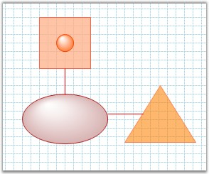

We can change the color of the LineConnector while activating the LineTool using the LineTool and LineBase class. In the Mouse up event of the LineTool class, change the color of the link.
Refer to the following code snippet in CustomLineConnector class.
|
[C#]
public override Tool ProcessMouseUp( MouseEventArgs evtArgs ) { CompleteAction( ptStart, ptEnd ); }
private void CompleteAction( PointF ptStart, PointF ptEnd ) { Node node = CreateNode( ptStart, ptEnd ); node.LineStyle.LineColor = Color.Red; }
// To activate the LineTool in MainForm.cs.
MyLineTool linetool = new MyLineTool(this.diagram1.Controller); this.diagram1.Controller.RegisterTool(linetool); this.diagram1.Controller.ActivateTool(linetool); |
|
[VB.NET]
Public Overloads Function ProcessMouseUp(ByVal evtArgs As MouseEventArgs) As Syncfusion.Windows.Forms.Diagram.Tool CompleteAction(ptStart, ptEnd) End Function
Private Sub CompleteAction(ByVal ptStart As PointF, ByVal ptEnd As PointF) Dim node As Syncfusion.Windows.Forms.Diagram.Node = CreateNode(ptStart, ptEnd) node.LineStyle.LineColor = Color.Red End Sub
' To activate the LineTool in MainForm.cs. Dim linetool As New MyLineTool(Me.diagram1.Controller) Me.diagram1.Controller.RegisterTool(linetool) Me.diagram1.Controller.ActivateTool(linetool) |

Figure 122: LineColor = "Red"